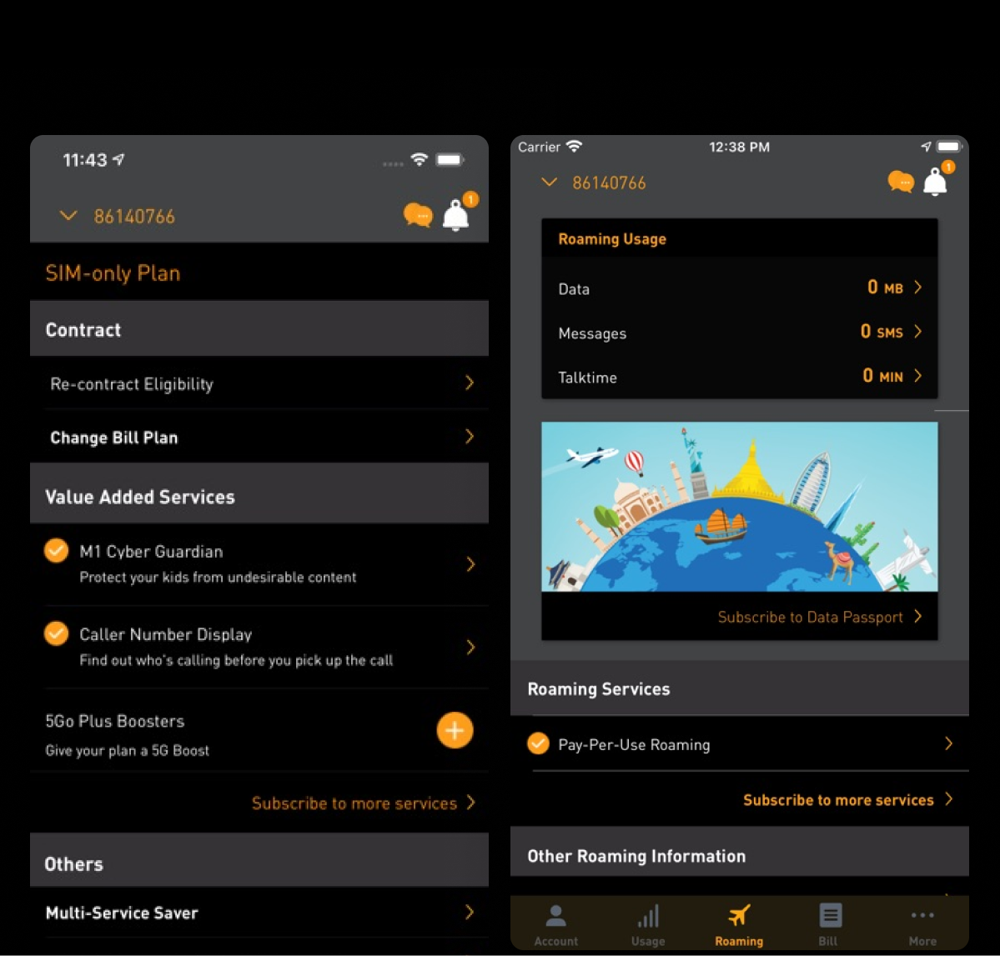
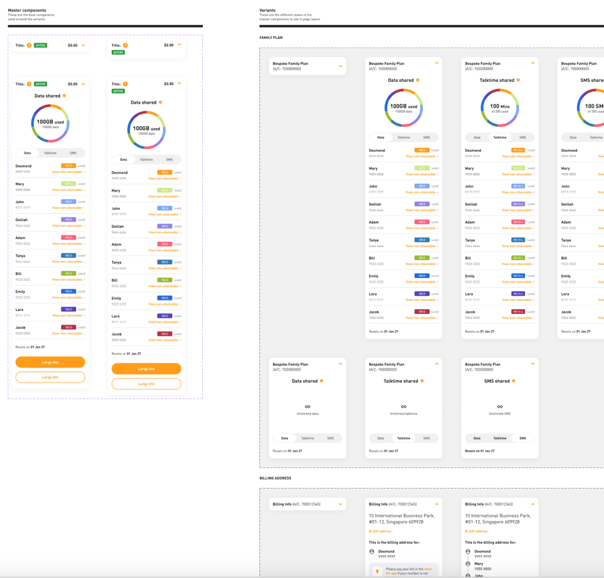
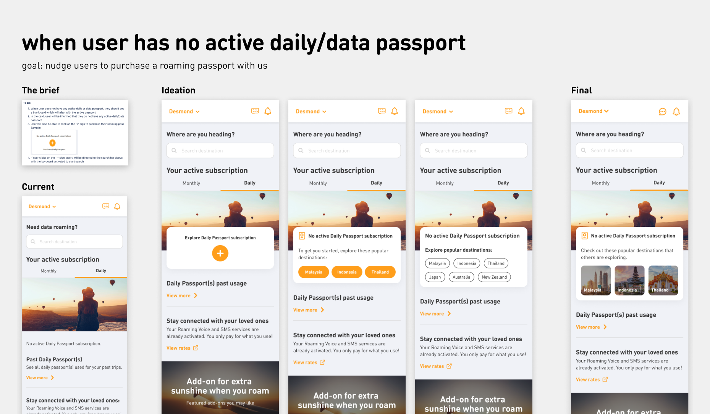

Case Study
My M1+ Mobile App
The My M1+ mobile app serves as a primary touchpoint for customers managing their telecom services. While moving from old to new stack, my team build the app’s design foundation by establishing a scalable design system, supporting Fibre Broadband migration flows, driving daily UX enhancements, and ensuring quality through UAT validation.
The Challenge
As the app expanded to support new service offerings and large-scale migration, the product required:
- Consistent UI patterns across growing features
- Clear migration flows to reduce customer confusion
- Continuous UX improvements through enhancement tickets
- Strong validation before release to protect user experience


